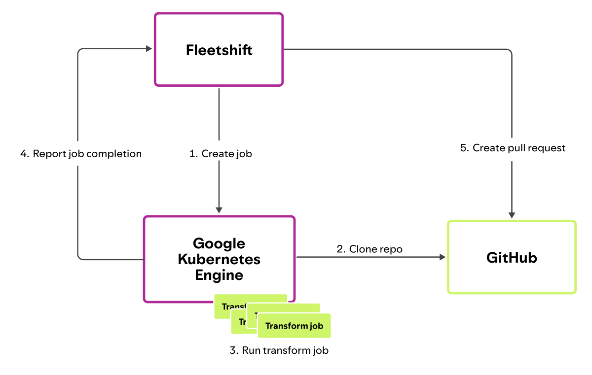
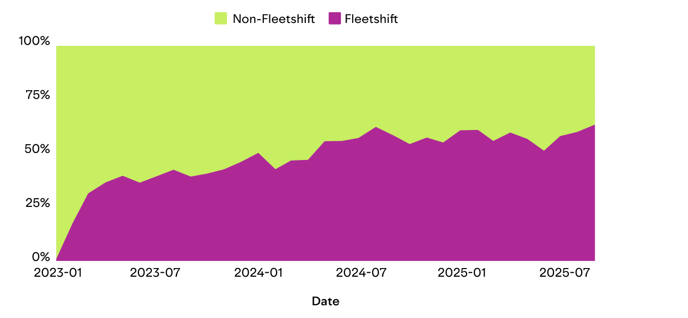
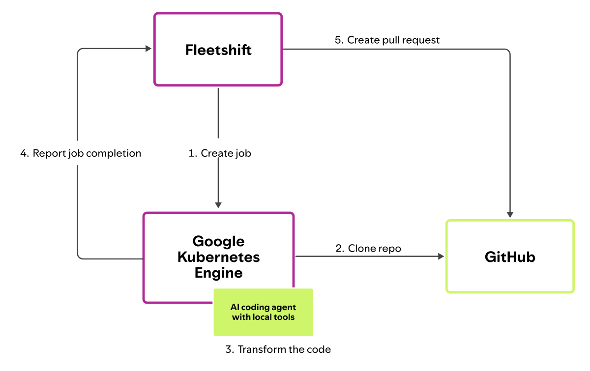
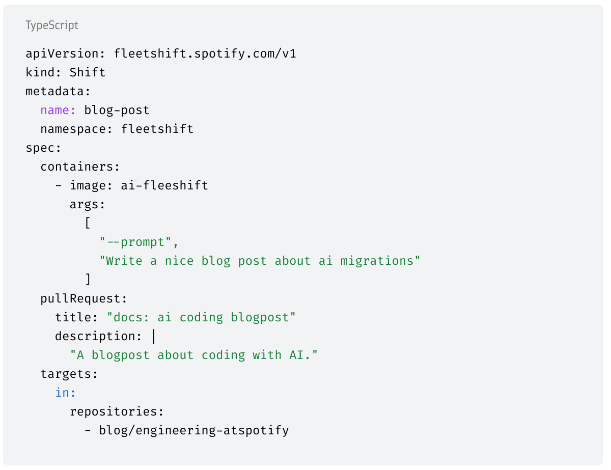
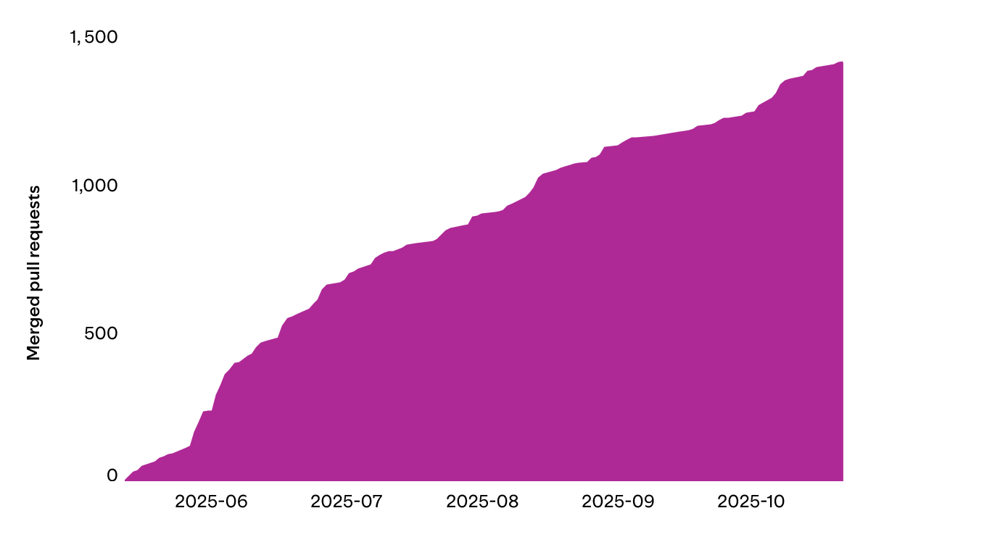
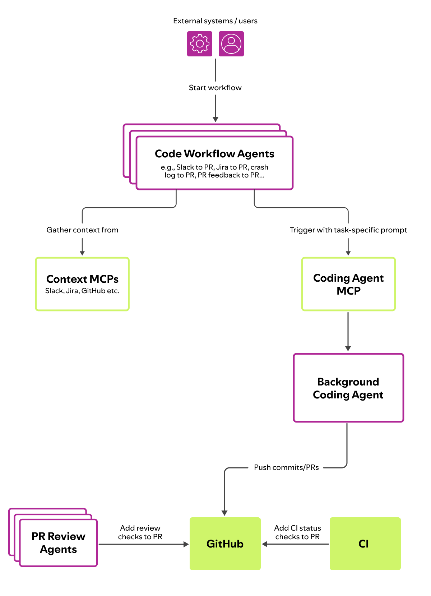
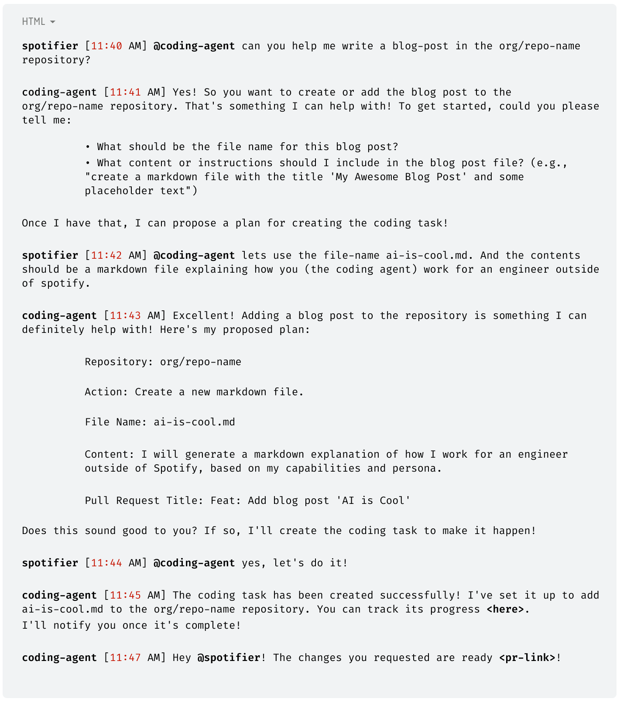

总结
Spotify 的 Honk 不是从“让 AI 写代码”开始的，而是从已有的 fleet-wide 迁移系统长出来的。
- Fleet Management 用 source-to-source 转换批量改仓库，自 2024 年中起约一半 PR 由它自动生成。
- 但复杂迁移需要写 AST/正则脚本，Maven 依赖更新器就因为边界情况膨胀到 2 万行。
- Spotify 把“声明迁移”这一步换成接自然语言的 coding agent，周边 infra 保持不变。
- 内部 CLI 负责调 agent、跑格式化和 lint、用 LLM-as-a-judge 评估 diff、上传日志和 trace，并支持随时换模型。
- 目前已有 1,500+ 个 agent 生成的 PR 合入生产，复杂迁移节省 60–90% 时间。
- 后台 agent 也被用于临时任务：从 Slack/GitHub 发起，先由交互 agent 收集上下文，再交给 coding agent 产出 PR。
- 新挑战是性能、可预测性、质量验证、安全和成本；Spotify 还在补 guardrail、sandbox 和反馈闭环。
原文逐段对照翻译
翻译说明：以下按原文顺序翻译全文；原文 7 张正文图已下载到本地并按原位置插入。文末的相关文章、标签和订阅模块从略。
引言
This is part 1 in our series about Spotify's journey with background coding agents (internal codename: “Honk”) and the future of large-scale software maintenance. See also part 2, part 3, and part 4.
这是 Spotify 后台 coding agent（内部代号 “Honk”）系列的第一篇，主题是它与大规模软件维护的未来。后续还有第二、三、四篇。
For years, developer productivity has improved through better tooling. We have smarter IDEs, faster builds, better tests, and more reliable deployments. But even so, maintaining a codebase, keeping dependencies up to date, and ensuring that the code follows best practices demands a surprising amount of manual work. At Spotify, our Fleet Management system automated much of that toil, yet any moderately complex migration still requires many human hands.
多年来，开发者生产力靠更好的工具不断提升：更聪明的 IDE、更快的构建、更好的测试、更可靠的部署。但即便如此，维护代码库、保持依赖更新、确保代码符合最佳实践，仍然需要大量手工劳动。在 Spotify，Fleet Management 系统已经自动化了其中很多苦活，但任何中等复杂度的迁移仍然需要很多人手。
What if we could close that final gap?
如果能补上最后这段差距呢？
This post explores how we have evolved our Fleet Management platform with background coding agents and what more than 1,500 merged AI-generated pull requests have taught us about the future of large-scale software maintenance.
这篇文章讲我们如何用后台 coding agents 演进 Fleet Management 平台，以及 1,500+ 个已合并的 AI 生成 PR 让我们学到了什么。
用 Fleet Management 自动化 toil
Fleet Management is a powerful framework for applying code transformations across all of Spotify’s repositories. The idea is simple: We write small snippets of code that themselves modify source code and apply these transformations to thousands of software components. This way we can take care of maintenance tasks across our codebase.
Fleet Management 是一个强大的框架，用来在 Spotify 所有仓库上应用代码转换。思路很简单：我们写一些“修改源代码的代码片段”，再把这些转换应用到成千上万个软件组件上，从而批量处理整个代码库的维护任务。
On a high level, Fleet Management has been a roaring success. It has allowed us to automate away countless hours of toil, vastly reducing the time to roll out fleet-wide changes. The system works by running these source-to-source transformations as jobs, in a containerized environment, which then automatically open pull requests against the target repositories.
从高层看，Fleet Management 非常成功。它替我们省掉了无数小时的苦活，大幅缩短了全 fleet 变更的落地时间。系统把 source-to-source 转换作为 job 在容器化环境里运行，然后自动向目标仓库开 PR。

This approach has excelled in several areas, including: Bumping dependencies in build files, such as in a Maven Project Object Model (POM) files; Updating configuration files, such as deployment manifests; Executing simple code refactors, like removing or replacing a deprecated method call.
这套方法在几类任务上特别有效：更新构建文件里的依赖，比如 Maven POM；更新配置文件，比如部署 manifest；执行简单的代码重构，比如删除或替换已废弃的方法调用。
The impact has been significant, with a steady stream of automated pull requests being merged daily, keeping our codebases consistent, up to date, and secure. Since mid-2024, around half of Spotify’s pull requests have been automated by this system.
影响很显著：每天都有稳定的自动 PR 被合并，让代码库保持一致、最新和安全。自 2024 年中以来，Spotify 大约一半的 PR 由这套系统自动生成。

But we knew from the beginning that this approach has its limits. While it is great for simple, repeatable tasks, making complex code changes is a challenge we’ve never fully solved. Defining source code transformations programmatically, by manipulating a program’s abstract syntax tree (AST) or using regular expressions, requires a high degree of specialized expertise. One example is our automated Maven dependency updater. While its core function — identifying pom.xml files and updating Java dependencies — is straightforward, handling all corner cases has led to the transformation script growing to over 20,000 lines of code. Because of this complexity, most of the automated changes we could implement were simple ones. Only a few teams have the required expertise and time to implement more sophisticated Fleetshifts over our entire codebase.
但我们从一开始就知道这套方法有上限。它很适合简单、可重复的任务，复杂代码改动却一直没被完全解决。要用程序化方式定义源代码转换——操作抽象语法树（AST）或用正则——需要很高的专业能力。自动 Maven 依赖更新器就是例子：核心功能（找到 pom.xml、更新 Java 依赖）很直接，但为了处理所有边界情况，转换脚本长到了 2 万多行。因为太复杂，我们能落地的自动改动大多很简单；只有少数团队有足够专业能力和时间，在整个代码库上实现更复杂的 Fleetshift。
At the same time, AI tools are becoming much more capable of making complex code changes. This presented a clear and promising opportunity: Can we apply AI to lower the barrier to entry and unlock the power of Fleet Management for more complex changes?
与此同时，AI 工具越来越擅长做复杂代码改动。这带来一个清晰而有前景的机会：能否用 AI 降低门槛，让 Fleet Management 也能处理更复杂的变更？
引入 AI coding agents
Last February, we began an investigation into using AI agents within our Fleet Management system. The goal was to allow engineers to define and run fleet-wide changes using natural language.
2025 年 2 月，我们开始在 Fleet Management 里探索使用 AI agents，目标是让工程师用自然语言定义并运行全 fleet 变更。

We started with the part of the process that needed the most help: the declaration of the code transformation itself. We replaced deterministic migration scripts with an agent that takes instructions from a prompt. All the surrounding Fleet Management infrastructure — targeting repositories, opening pull requests, getting reviews, and merging into production — remains exactly the same.
我们从最需要帮助的环节开始：代码转换本身的声明。我们把确定性的迁移脚本换成一个接 prompt 指令的 agent；周边的 Fleet Management 基础设施——定位仓库、开 PR、获取 review、合并进生产——完全不变。

Instead of adopting an off-the-shelf coding agent as it is, we decided to build a small internal CLI. This CLI can delegate executing a prompt to an agent, run custom formatting and linting tasks using local Model Context Protocol (MCP), evaluate a diff using LLMs as a judge, upload logs to Google Cloud Platform (GCP), and capture traces in MLflow. Crucially, having that CLI allows us to seamlessly switch between different agents and LLMs. In the fast-moving environment that is GenAI, being flexible and pluggable this way has already allowed us to swap out pieces multiple times, giving our users a preconfigured and well-integrated tool out of the box, without exposing them to the nitty-gritty details.
我们没有直接采用现成的 coding agent，而是写了一个小型内部 CLI。这个 CLI 可以把 prompt 交给 agent 执行，用本地 MCP 跑自定义格式化和 lint，用 LLM-as-a-judge 评估 diff，把日志上传到 GCP，把 trace 写进 MLflow。关键点是，有了这层 CLI，我们可以在不同 agents 和 LLMs 之间无缝切换。GenAI 变化这么快，这种灵活、可插拔的设计已经让我们多次替换组件，同时用户拿到的仍是一个预配置、集成好的工具，不用碰底层细节。

We saw an immediate need for this type of product internally. We were codeveloping the tooling alongside early adopters who applied it to their in-flight migrations. To date, our agents have generated more than 1,500 pull requests that teams across Spotify have merged into our production codebase. And not trivial changes, either — we’re now starting to tackle changes such as:
内部对这类产品的需求立刻显现。我们和早期用户一起开发工具，他们把它用在正在进行的迁移上。到目前为止，agents 已经生成 1,500+ 个 PR，被 Spotify 各团队合并进生产代码库。而且不是小改动——我们已经开始处理这类变更：
Language modernization, such as replacing Java value types with records; Upgrades with breaking changes, such as migrating data pipelines to the newest version of Scio; Migrating between UI components, such as moving to the new frontend system in Backstage; Config changes, such as updating parameters in YAML or JSON files and still adhering to schemas and formatting.
语言现代化，比如把 Java value types 换成 records；带 breaking changes 的升级，比如把数据管道迁到最新版 Scio；UI 组件迁移，比如迁到 Backstage 的新前端系统；配置变更，比如更新 YAML/JSON 参数，同时仍然遵守 schema 和格式。
For these migrations we’ve seen a total time saving of 60–90% compared to writing the code by hand the good old-fashioned way. The ROI for an automated change also continues to increase as we scale it out to more and more codebases over time. We consider this a very promising start, and we strongly believe that we are only scratching the surface of what’s possible in terms of leveraging AI in the migration space.
这些迁移相比传统手写代码，总体节省了 60–90% 的时间。随着自动化改动铺到越来越多代码库，ROI 还会继续上升。我们认为这是一个很有希望的开端，也坚信 AI 在迁移领域的能力才刚刚被触及。
不只是迁移
What if you could also trigger the same agent from your IDE or chat, give it a task, and then go to lunch? Over time, it became clear that there is a need for a background coding agent not only for migrations, but also for ad hoc tasks.
如果你还能从 IDE 或聊天里触发同一个 agent，给它一个任务，然后去吃午饭呢？随着时间推移，我们越来越清楚：后台 coding agent 不只用于迁移，也适用于临时任务。

By exposing our background coding agent via MCP, Spotifiers can now kick off coding agent tasks from both Slack and GitHub Enterprise. They first talk to an interactive agent that helps to gather information about the task at hand. This interaction results in a prompt that is then handed off to the coding agent, which produces a pull request.
通过 MCP 暴露后台 coding agent 后，Spotify 员工可以从 Slack 和 GitHub Enterprise 发起任务。他们先和一个交互 agent 对话，由它帮忙收集任务信息；对话最终形成 prompt，再交给 coding agent 产出 PR。

We quickly found enthusiastic users for this feature, for example, as a lightweight way for engineers to capture architecture decision records (ADRs) from a thread in Slack, or product managers that can now propose simple changes without cloning and building repos on their laptops.
这个功能很快有了热情的用户。比如工程师可以轻量地从 Slack 线程里整理架构决策记录（ADR）；产品经理也能提出简单改动，而不用在笔记本上 clone 和构建仓库。
We have seen a nice symbiosis between the migration and background agent use cases. For example, improvements to the agent configuration and tools now apply to any PRs generated, no matter the source of the task. We also benefit from the standardization, say, in terms of tagging commits, managing LLM quotas, or collecting traces.
迁移和后台 agent 两个场景形成了很好的共生关系。比如对 agent 配置和工具的改进，会应用到所有生成的 PR，不管任务来自哪里；我们也从标准化中受益，比如提交打标、LLM 配额管理、trace 收集。
后台 agent 的新挑战
Introducing AI agents into our migration and developer workflows is a new and exciting space for us. We see great impact and momentum from our first iteration of tools: hundreds of developers now interact with our agent, and we’ve already merged more than 1500 pull requests.
把 AI agents 引入迁移和开发者工作流，对我们来说是一个新领域，也很令人兴奋。第一版工具已经带来很大影响和势头：数百名开发者在使用 agent，合并的 PR 已超过 1,500 个。
But coding agents come with an interesting set of trade-offs. Performance is a key consideration, as agents can take a long time to produce a result, and their output can be unpredictable. This creates a need for new validation and quality control mechanisms. Beyond performance and predictability, we also have to consider safety and cost. We need robust guardrails and sandboxing to ensure agents operate as intended, all while managing the significant computational expense of running LLMs at scale.
但 coding agents 带来一组有意思的取舍。性能是关键：agent 可能很久才出结果，输出也不可预测，因此需要新的验证和质量控制机制。除了性能和可预测性，还要考虑安全和成本。我们需要可靠的 guardrail 和 sandbox，确保 agent 按预期工作，同时管理大规模运行 LLM 的算力开销。
We don’t have all the answers yet, but addressing these challenges is where our team is focusing its efforts. We’re excited to share more of what we’re learning as we explore this space. Stay tuned for our follow-up posts on effective context engineering and using feedback loops to achieve more predictable results.
我们还没有所有答案，但团队正在集中解决这些挑战。我们会继续分享探索中的收获；后续文章会讲有效的 context engineering，以及如何用反馈闭环获得更可预测的结果。
Nov 6, 2025. Published by Max Charas (Senior Staff Engineer) and Marc Bruggmann (Principal Engineer).
2025 年 11 月 6 日。作者：Max Charas（Senior Staff Engineer）和 Marc Bruggmann（Principal Engineer）。
学习者视角
关键收获
- 不要让 AI 从零重写整套流水线。 Spotify 只替换“声明迁移”这一步，仓库定位、开 PR、review、合并全部复用原有基础设施。
- CLI 是解耦层。 把 agent、MCP、lint、LLM-as-a-judge、日志和 trace 包在一个内部 CLI 里，才能随时换模型而不影响用户。
- 迁移和临时任务可以共用一套能力。 同一套 agent 配置和工具，既服务 fleet-wide 迁移，也服务 Slack/GitHub 里的 ad hoc 请求。
- ROI 随规模上升。 迁移脚本写一次，铺到越多代码库，节省的 60–90% 时间越值。
- 后台 agent 的瓶颈会从“能不能做”转向“可不可控”。 性能、可预测性、验证、安全和成本才是下一阶段重点。
放回课程里看
这篇是 Week 8 的“迁移场景”代表：它展示后台 agent 如何嵌入一个已经成熟的批量变更系统，而不是另起炉灶。和 Stripe Minions 相比，Spotify 更强调“复用 Fleet Management + 内部 CLI 解耦”；和 Ramp Inspect 相比，Spotify 的入口更偏迁移和内部工作流。
一个反直觉点
很多人以为 AI 迁移的价值是“让 agent 写迁移脚本”。Spotify 的做法相反：保留确定性的迁移执行框架，只让 agent 负责最难的“用自然语言声明要改什么”。 这样既降低门槛，又不牺牲原有基础设施的可靠性。
拓展
思考题
- 你所在团队有没有类似 Fleet Management 的批量变更系统？哪一步最适合换成 agent？
- 为什么“只替换声明层”比“让 agent 直接操作仓库”更安全？
- 如果 agent 生成的 PR 有 20% 需要人工返工，60–90% 的时间节省还成立吗？怎么算真实 ROI？
- 后台 agent 的“可预测性”可以用哪些指标衡量？
练习
为一个批量迁移任务设计“确定性框架 + agent 声明层”：
- 哪些步骤保持确定性（定位仓库、开 PR、合并）；
- agent 只负责哪一段（把自然语言变成转换意图）；
- 需要哪些 lint / 测试 / LLM-as-a-judge 检查；
- 如何记录 trace 和成本；
- 什么情况下必须回退到手写脚本。